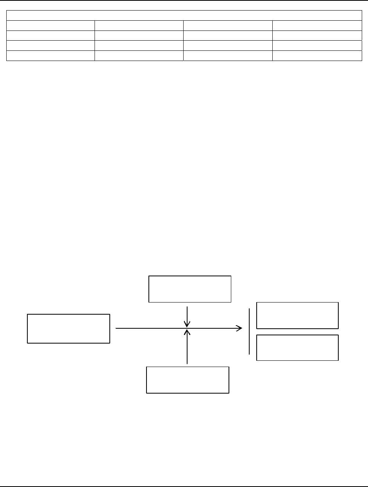
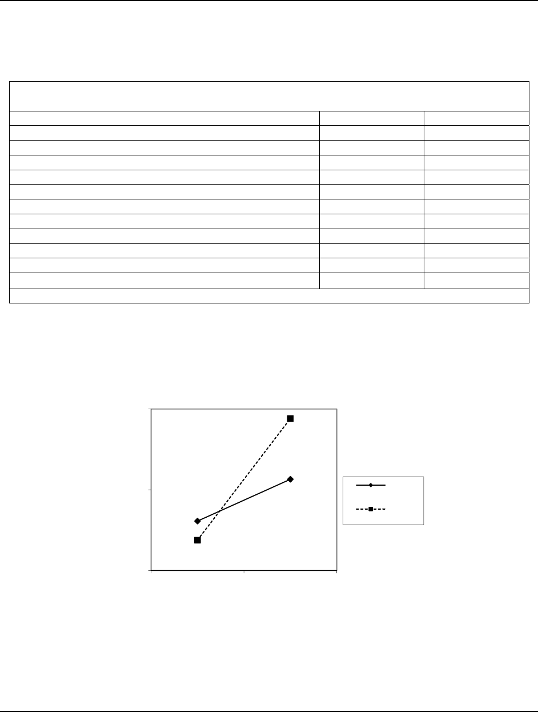

Page 95
Academy of Strategic Management Journal, Volume 12, Number 1, 2013
WHAT DO VALUES HAVE TO DO WITH IT?:
AN EXPLORATION INTO THE MODERATING IMPACT
OF WORK VALUES ON THE RELATIONSHIP
BETWEEN LEADER-MEMBER-EXCHANGE AND
WORK SATISFACTION
Kelly Monahan, Regent University
ABSTRACT
This study is an attempt to understand and clarify the moderating role of individual work
values on the relationship between leader-member exchange (LMX) and work satisfaction within
the American workforce. Data collected from a sample of 122 full-time working employees
across various U.S. based organizations is assessed. A multiple regression analysis is used to
determine the direct impact of leader-member exchange dimensions on extrinsic and intrinsic job
satisfaction, and a hierarchical regression analysis is used to determine the moderating
influence of self-enhancement and self-transcendence values. It is found that while LMX has a
direct positive relationship with both facets of job satisfaction, LMX has a greater statistically
significant influence on extrinsic facets of job satisfaction. The moderating analysis reveals that
self-transcendence values significantly moderates the relationship between extrinsic work job
satisfaction and LMX dimensions. These findings encourage managers to continue to develop the
attributes of LMX, which in return will likely result in high employee extrinsic job satisfaction.
The results also note the importance for managers to realize that they represent the organization
for their employees, and their level of support and values is concurrent with how their employees
view the entire organization.
Keywords: Leader-member exchange, job satisfaction, work values
INTRODUCTION
The study of employee satisfaction and managerial influence continues to remain
important in today’s volatile marketplace. Recently released data shows that U.S. job
satisfaction is at an all-time low, with less than 50% of employees satisfied within their role
(Consumer Research Center of The Conference Board, 2010). The literature notes that a
contributing or detracting factor to one’s satisfaction is an employee’s direct supervisor (Robie,
Ryan, Schmieder, Parra, & Smith, 1998). The social science field contains numerous studies
expanding the literature regarding the relationship between work satisfaction and leadership.
Specifically, research has found that leader-member exchange (LMX), which is the quality of

Page 96
Academy of Strategic Management Journal, Volume 12, Number 1, 2013
one’s relationship with his or her direct supervisor directly, influences ones satisfaction at work
(eg. Graen, Novak & Sommerkamp, 1982; Graen, Orris & Johnson, 1973l; Scandura & Graen,
1984). However, a compelling influence to this relationship, which has largely been ignored
within the literature are followers’ values. Human nature is comprised of innate values, which
influence the way one is satisfied in their job (Schwartz, 1994). These values are the lens, which
interprets ones relationship with his or her supervisor. Therefore, it is necessary for both
employees as well as supervisors to understand the implications that followers’ values have on
understanding the level of relationship with his or her supervisor and the impact it may have on
their work satisfaction.
However, few studies examine the impact that one’s values have on the relationship
between leader-member exchange and work satisfaction. Callum’s (2011) study found a positive
relationship between leader-member-exchange, job satisfaction and one’s psychological contract
fulfillment. However, an employee’s psychological contract may vary from workplace to
workplace depending upon the agreed expectations. Therefore, it is necessary to continue to
explore ones values, which are fairly consistent throughout one’s life and not dependent upon a
work environment (Schwartz, 1994). Graen et al. (1982) empirical research explored the
relationship between an employee’s growth need strength and LMX. Moreover, while growth
need strength may derive from ones values, this limited scope allows for little discussion
surrounding the impact of an employee’s value set. Schyns, Kroon, and Moors (2008) note that
few studies consider follower characteristics, such as values, within the LMX construct. Their
study also measured the impact of followers’ growth need strength, extraversion, and locus of
control. However, employees’ values are not discussed nor measured within the study. Questions
remain such as, why are certain employees more satisfied with their supervisor and organization
than others are? Why do certain employees’ relationships with the supervisor have greater
influence on their job satisfaction compared to others? Ros, Schwartz and Surkiss (1999) point
out the gap within the literature that exists concerning one’s values and its impact within the
workplace in addressing questions such as these.
This study is an attempt to understand and clarify the moderating role of individual work
values on the relationship between leader-member exchange and work satisfaction within the
American workforce. Though previous studies have noted that the quality of a leader’s
relationship with an employee influences work satisfaction, few have examined the moderation
effect of individual work values. Within the model, an employee’s work values are predicted to
moderate the relationship between leader-member-exchange and employee work satisfaction. A
quantitative study, using data collected from 122 participants further elaborates on the
relationship between the influence of leader-member exchange on employee work satisfaction
and the moderating role of work values. The research question under consideration is do
individual work values moderate the relationship between leader-member exchange dimensions
and employee work satisfaction.

Page 97
Academy of Strategic Management Journal, Volume 12, Number 1, 2013
A REVIEW OF THE LITERATURE
Leader-Member Exchange Theory
Leader-member-exchange (LMX) theory is a relatively contemporary theory within
leadership studies. Many leadership theories solely focus on the behaviors of the leader, rather
than also noting the followers’ involvement. Dansereau, Graen, and Haga (1975) originated the
construct when introducing the vertical dyad linkage (VDL) theory. VDL evolved into LMX
theory with the emphasis on a leader’s relationship with each individual organizational member
(Graen & Scandura, 1987). The central focus of the theory is understanding the relationship that
exists between the supervisor and employee as well as the exchanges that take place over time
between the two.
How do individual relationships form between leader and employee, and how do they
differ across organizational members? It has been suggested that these relationships form based
on “personal compatibility and subordinate competence and dependability” (Yukl, 2006, p. 117).
Dienesch and Linden (1986) argue that each behave based on the amount of resources one puts
forth into the relationship. “For example, the leader may offer increased job latitude or
delegation to the member, and the member may offer strong commitment to work goals or high
levels of effort and performance to the leader” (Bauer & Green, 1996, p. 1538). However, a
leader has only a limited amount of resources to dispense upon individual followers. Therefore,
Green, Anderson, and Shivers (1996) note the disparity between what is considered high-level
exchanges and lower-level exchanges. For example, those relationships between leader and
follower that exhibit mutual respect and trust will evolve into higher quality relationships.
Whereas, those that evolve based on obligation of organizational employment will experience a
lower quality relationship (Liden, Sparrowe & Wayne, 1997).
Since the origination of LMX theory, a growing body of research has been conducted to
determine the outcomes of LMX theory. Many of the studies confirm that a follower’s
relationship with the leader is crucial to one’s work experience (Graen & Cashman, 1975; Graen
& Uhl-Bien, 1995). One of the noteworthy outcomes supported in the literature is that leader-
member exchange is related to subordinate satisfaction (Graen, Novak & Sommerkamp, 1982;
Graen, Orris & Johnson, 1973l; Scandura & Graen, 1984). Liden and Maslyn’s studies (1998)
also have found a significant correlation between LMX and job satisfaction. In addition, few
studies exist surrounding the influence that LMX has on the different factors of job satisfaction,
intrinsic and extrinsic. Springer (2006) explored the relationship of overall LMX and its varying
influence on either extrinsic or intrinsic job satisfaction. Two questions under consideration are
does LMX dimensions positively correlate with job satisfaction and do these factors of LMX
differ on their impact between extrinsic and intrinsic motivators of job satisfaction.
Page 98
Academy of Strategic Management Journal, Volume 12, Number 1, 2013
Individual Job Satisfaction
Locke et al. (2001) describes job satisfaction as the gratifying state one experiences while
on the job. Fields (2002) defines job satisfaction, “as an employee’s affective reactions to a job
based on comparing actual outcomes with desired outcomes” (p. 1). Westover et al (2010) note
that when expectations are met or exceeded, employee job satisfaction is often high. Work
satisfaction is known to not only impact one’s work life, but also one’s personal life as well
(Judge & Watanable, 1993). “Job satisfaction has larger effects on life satisfaction, suggesting
that job satisfaction is an essential component of an employee’s life” (Fields, 2002, p. 2). Also
noted is that employees who are more satisfied in their role are more likely to outperform those
who are not (Ostroff, 1992). Therefore, it is important to understand the impact of employee
satisfaction within the workplace, and the role leader-member-exchange plays in influencing it.
Employee work satisfaction stems from a variety of factors, such as the comparison of
anticipated outcomes with definite consequences (Cranny, Smith, & Stone, 1992), internal and
external job components (Howard & Frank, 1996), job performance (George & Jones, 1997), as
well as values (Kinicki & Kreitner, 2007). The literature also provides a connection between
management and work satisfaction (Robie, Ryan, Schmieder, Parra, & Smith, 1998). Herzberg
(1966) found a link between employee’ work dissatisfaction and their immediate supervisor.
Also worth nothing is that Zeitz (1990) found an employee’s perception of management helped
explain job satisfaction.
While numerous studies in the literature support the relationship between LMX and job
satisfaction, few have explored the difference in follower experience of LMX between intrinsic
and extrinsic job satisfaction. Questions remain such as does a followers perception of LMX
have greater influence on the employee’s extrinsic or intrinsic job satisfaction? Therefore, the
proposed model suggests that leader-member exchange will be positively relate to both intrinsic
and extrinsic job satisfaction, but have a greater influence on an employee’s extrinsic job
satisfaction. The rationale behind the greater influence on extrinsic job satisfaction is the
manager’s ability to influence those facets of an employee’s job.
Table 1: Facets of Job Satisfaction
Intrinsic Factors Extrinsic Factors
Interest in job Compensation
Meaningful work Benefits
Status Relationships
Personal growth Opportunities
Sense of accomplishment Respect
Sense of fulfillment Recognition
Autonomy

Page 99
Academy of Strategic Management Journal, Volume 12, Number 1, 2013
Table 1 notes the facets of job satisfaction of both extrinsic as well as intrinsic job
satisfaction. The model also proposes the following control variables should also be considered
based on their potential influence on job satisfaction: a) an employee’s compensation, b) gender,
c) age, and d) education level, as these have found to have an influence on employee work
satisfaction as well (Fields, 2002).
H1a: Followers’ experience with leader-member exchange are positively related to overall
employee work satisfaction
H1b: Followers’ experience with leader-member exchange is more positively related to
extrinsic job satisfaction than intrinsic job satisfaction
Individual Work Values
While the literature is full of studies examining leader-member exchange and its
outcomes, there are few if not any that examine the moderating influence of an employee’s
individual work values. Basic values are often explained as one’s beliefs, needs, goals, and
preferences (Fields, 2002). Work values are those basic values expressed in a work setting (Ros
et al., 1999). These work values represent what an employee is seeking for in their general work
experience. Therefore, work values will generally influence the way the employee views the role
of his or her manager. Harding, Phillips, and Fogarty’s (1986) work confirm the role values play
in the personal development of employees and the way it affects the employee’s outlook. For
example, an employee who values work relationships will expect a high quality exchange with
their manager. If on the other hand an employee values power over the relationship with one’s
supervisor, the quality of the exchange with one’s manager will lessen in its ability to influence
the employee’s satisfaction.
The proposed model will focus on Schwartz’s (1994) theory of basic human values, in
which the researcher identifies ten specific motivational values, which are universally
recognized. The ten motivational values are power, achievement, hedonism, stimulation, self-
direction, universalism, benevolence, tradition, conformity, and security. Overarching these ten
motivational values are four core values: openness to change, conservation, self-enhancement,
and self-transcendence.
Table 2 summarizes the various motivational values, which fall under each category. For
this, particular study, self-enhancement and self-transcendence values are chosen for
measurement by using an abbreviated version of Schwartz (1994) Work Values Survey. The
literature supports that two core components, for example self-transcendence and conservation,
“share a single motivational goal—subordination on self in favor of socially imposed
expectations” (Ros et al., 1999, p. 52). Therefore, the focus on self-enhancement and self-
transcendence will simplify the study while ensuring that all motivational goals are being
measured.

Page 100
Academy of Strategic Management Journal, Volume 12, Number 1, 2013
Table 2: Schwartz (1994) Individual Values
Openness to Change Conservation Self-Enhancement Self-Transcendence
Hedonism Security Achievement Universalism
Stimulation Tradition Power Benevolence
Self-Direction Conformity Hedonism
Self-enhancement values focus on dominance over others for the benefit of oneself. On
the other end of the spectrum of values is self-transcendence, which emphasizes tolerance and
viewing all as equals, and therefore expressing concern for the general welfare (Elenkov,
Naoumova, Lowery, Chornovil, Sarov, & Andov, 2004). These opposing value sets are
proposed to influence the relationship between leader-member exchange and employee work
satisfaction due to the change in expectations of one’s dyad relationship, depending on an
individual’s value set, thereby strengthening or weakening this relationship. The level of one’s
exchange and its ability to influence one’s satisfaction at work is proposed to strengthen for
those individuals that hold self-transcendence values. Whereas those individuals who hold self-
enhancement values, it is proposed that, the relationship with one’s manager and its influence on
one’s satisfaction is weakened.
Figure 1. The proposed model suggests that leader-member exchange will be positively related to employee
work satisfaction, with a moderating influence of an employee’s individual work values.
For example, an employee who values benevolence will more likely be satisfied when he
or she experiences a high quality relationship with one’s direct supervisor, because that
employee believes the supervisor is directly involved with the employee and organization’s
Leader-Member
Exchange
S elf-t ranscendence
values (Mo)
Self-enhancement
values (Mo)
Employee Intrinsic
Job Satisfaction
Employee Extrinsic
Job Satisfaction
H1H3
H2

Page 101
Academy of Strategic Management Journal, Volume 12, Number 1, 2013
welfare. However, if the employee values his or her own power and advancement, than the level
of ones relationship with the manager is not as important to his or her satisfaction.
H2: Self-enhancement values of employees will weaken the relationship between leader-
member exchange and employee work satisfaction
H3: Self-transcendence values of employees will strengthen the relationship between
leader-member exchange and employee work satisfaction
METHODOLOGY
Sample and Procedures
The participants were collected from a convenience sample and asked to complete an
online questionnaire. Questionnaires were distributed over a four-week period using social media
networks and email. The sampling method chosen was the snowball method of data collection.
Participants were sent a link to the questionnaire and asked to pass along to other participants
who may be interested in completing. The researcher noted within the message that participants
must be currently working full-time and have a direct supervisor.
A total of 122 questionnaires were returned and determined to be usable questionnaires.
Therefore, the sample consists of 122 followers within a variety of US based organizations. The
sample consists of 57% females and 43% males. The sample consists of 49% within the 35-54
age range, while 31% fell into the 26-34 age range. Forty-one percent of the sample hold a
bachelor’s degree, (15% had high school degree or some college), 41% obtained a master’s
degree and 5% completed doctoral work. 41% of the sample brings home more than $90,000 in
annual compensation.
MEASUREMENTS
Leader-Member Exchange.
To measure the dimensions of leader-member exchange, the LMX-MDM instrument
originated by Liden and Maslyn (1998) is used. The measure is comprised of 12 questions within
the instrument. The items are scored from 1 to 5, ranging from 1 = strongly disagree to
5=strongly agree. Sample items include, “My supervisor is the kind of person one would like to
have as a friend”, “I am impressed with my supervisor’s knowledge of his/her job”, “My
supervisor defends my work actions to a superior, even without complete knowledge of the issue
in question”, and “I do work for my supervisor that goes beyond what is specified in my job

Page 102
Academy of Strategic Management Journal, Volume 12, Number 1, 2013
descriptions”. The 12-item scale’s was α= .920 for this sample. While the instrument can
measure four identified dimensions within the LMX construct (professional respect, contribution,
loyalty, and affect), Graen and Uhl-Bien (1995) note that, “LMX construct has multiple
dimensions, but these dimensions are so highly correlated that they can be tapped into with the
single measure of LMX” (p. 237). Therefore, due to the high level of inter-correlations among
the dimensions within the instrument, the overall construct of LMX, which measures the quality
of one’s exchange with a direct supervisor, will be used throughout the analysis and results,
rather than analyzing four individual highly correlated dimensions.
Job Satisfaction.
To measure job satisfaction the Minnesota Satisfaction Questionnaire (MSQ) short form,
consisting of 20 questions is used. These questions provide a wide range of general job
satisfaction measures. A 5-point Likert scale captures the responses ranging from 1= very
dissatisfied with this aspect of my job to 5= very satisfied with this aspect of my job. Sample
items include “The chance to work alone on the job”, “The way my job provides for steady
employment”, and “The working conditions”. Fields (2002) reports that the reliability for the
short form questionnaire has ranged with a coefficient alpha from .85 to .91 in previous studies
(eg. Hart, 1999; Huber, Seybolt, & Venemon, 1992; Klenke-Hamel & Mathieu, 1990). Also
noted is the test-retest reliability of r=.58 across three periods (Wong et al., 1998). The scale
also contains two subsets of job satisfaction, which are intrinsic factors (12 questions, α=.856)
and extrinsic items (8 questions, α=.799), both proving high reliability upon the subsets of the
instrument.
Individual Work Values.
A modified version of Schwartz (1994) Work Value Survey is used to measure individual
work values. The self-transcended values subset contains 18 items with α=.899. Self-enhanced
values consists of 13 questions with α=.770. A 5-point likert scale is used ranging from 1=
opposed to my values to 5= of supreme importance. Sample items include “Protecting the
environment” (universalism), “Helpful” (benevolence), “Social power” (power), “successful”
(achievement), and “enjoying life” (hedonism).
RESULTS
The zero-order correlations for LMX and the two factors of job satisfaction are reported
in Table 3. As displayed in the table, LMX dimensions are positively related to job satisfaction;
however, LMX dimensions are more strongly correlated to extrinsic job satisfaction factors
Page 103
Academy of Strategic Management Journal, Volume 12, Number 1, 2013
(.577) compared to intrinsic (.400). All correlations are statistical significant at the p < 0.01
level.
Table 3: Correlations of LMX and Job Satisfaction
Mean SD 1 2 3 4 5 6 7 8 9 10
1. Overall Job Sat 3.64 0.54 -
2. Intrinsic Job Sat 3.78 0.56 0.93 -
3. Extrinsic Job Sat 3.41 0.64 0.88 0.65 -
4. Overall LMX 3.83 0.66 0.53 0.40 0.58
*
-
5. Self-Enhancement 3.49 0.42 0.08 0.08 0.07 0.05 -
6. Self-Transcendence 3.80 0.53 0.06 0.03 0.07 0.05 0.42
*
-
7. Gender 1.56 0.50 0.03 0.06 -0.02 -0.02 0.19
*
0.27 -
8. Education Level 5.24 0.99 0.00 0.06 -0.08 0.05 0.10 0.04 -0.16 -
9. Income 6.44 2.13 0.15 0.13 0.15 0.11 -0.03 -0.12 -0.04 0.19 -
10. Age 4.69 0.84 0.11 0.10 0.11 -0.10 -0.23* 0.00 -0.01 -0.04 0.43
**
-
**. Correlation is significant at the 0.01 level (2-tailed).
*. Correlation is significant at the 0.05 level (2-tailed).
Two multiple hierarchical moderated regression analyses were completed to test the main
effect and the interaction hypotheses (see Table 4 & 5). To test each of the moderation effects,
the control variables were entered into the first block (age, gender, income, and education),
followed by the main effects of overall LMX and values, and the interaction in the last box. This
method is consistent with the procedures described by Aiken and West (1991).
Hypothesis 1a predicted that LMX would be positively related to overall job satisfaction.
As seen in Table 4, LMX are positively related to job satisfaction (β=.505, p<0.01),
demonstrating incremental validity (∆R2 =.243) beyond the control variables. Overall, these
findings are consistent with hypothesis 1a, which suggest that the level of one’s relationship as
seen in LMX theory is directly associated with the level of one’s satisfaction at work. Hypothesis
1b predicted that LMX will be more positively associated with extrinsic compared to intrinsic
job satisfaction. As seen in the zero-order correlations, while both facets of job satisfaction are
positively related to LMX, LMX are significantly higher with extrinsic job satisfaction compared
to intrinsic (z=1.730, p<0.05). Results from the regression analysis also support this conclusion
that LMX’s influence on extrinsic job satisfaction (β=.560, p<0.01) is greater compared to
intrinsic (β=.378, p<0.01) while controlling for all control variables (age, gender, income, and
education). These results are statistically significant when testing for the difference in the
regression coefficients (z=1.99, p<.05). Therefore, hypothesis 1b is fully supported by these
findings.
Page 104
Academy of Strategic Management Journal, Volume 12, Number 1, 2013
Table 4: Results From Multiple Linear Regression Analysis of LMX on Job Satisfaction
Hierarchical block variables ∆R
2
β
Block 1: Controls 0.05
Gender 0.56
Age 0.11
Education Level -0.05
Income 0.93
Block 2: Main Effects 0.24**
LMX 0.51**
Total R
2
0.29
Note:** p < 0.01, *p<0.10
Table 5: Results From Moderated Hierarchical Regression of Self-Enhancement Values
on LMX and Intrinsic Job Satisfaction
Hierarchical block variables ∆R
2
β
Block 1: Controls 0.04
Gender 0.82
Age 0.32
Education Level 0.53
Income 0.13
Block 2: Main Effects 0.14**
LMX 0.38**
Self-Enhancement Values 0.08
Block 3: Interaction 0.00
LMX*Self-Enhancement Values -0.02
Total R
2
0.23
Note:** p < 0.01, *p<0.10
Hypothesis 2 predicted that the relationship between LMX and job satisfaction would be
moderated by self-enhancement values, such that one with high self-enhancement values would
weaken the influence of LMX on job satisfaction. After running a hierarchical regression
analysis of the interaction of LMX*self-enhancement values, it did not yield a significant
interaction beyond the main effects on both extrinsic job satisfaction (β=0.64, p>.05, ∆R
2
= 0)
and intrinsic job satisfaction (β=-.179, p>.05, ∆R
2
= 0). Therefore, hypothesis 2 is not supported.
Page 105
Academy of Strategic Management Journal, Volume 12, Number 1, 2013
Table 6: Results From Moderated Hierarchical Regression of Self-Enhancement Values
on LMX and Extrinsic Job Satisfaction
Hierarchical block variables ∆R
2
β
Block 1: Controls 0.06
Gender -0.03
Age -0.16
Education Level 0.10
Income 0.11
Block 2: Main Effects 0.31**
LMX 0.55**
Self-Enhancement Values 0.10
Block 3: Interaction 0.00
LMX*Self-Enhancement Values 0.03
Total R
2
0.23
Note:** p < 0.01, *p<0.10
Table 7: Results From Moderated Hierarchical Regression of Self-Transcendence Values
on LMX and Intrinsic Job Satisfaction
Hierarchical block variables ∆R
2
β
Block 1: Controls 0.04
Gender 0.10
Age 0.04
Education Level 0.06
Income 0.12
Block 2: Main Effects 0.14**
LMX 0.37**
Self-Transcendence Values 0.01
Block 3: Interaction 0.05
LMX*Self-Transcendence Values 0.08
Total R
2
0.23
Note:** p < 0.01, *p<0.10
Hypothesis 3 predicted that the relationship between LMX and employee job satisfaction
would be moderated by the interaction of self-transcendence values*LMX. A moderated
hierarchical regression analysis was performed, yielding a statically significant interaction on
extrinsic job satisfaction (β=.274, p<.10, ∆R
2
= 0.02) as seen in Table 8. While a change is also
record on intrinsic work satisfaction as seen in Table 7, it was not deemed statistically significant
(β=.077 p>.10, ∆R
2
= 0.005). Therefore, hypothesis 3 is supported when examining the

Page 106
Academy of Strategic Management Journal, Volume 12, Number 1, 2013
interaction on extrinsic work satisfaction, however not supported when noting the interaction on
intrinsic work satisfaction.
Table 8: Results From Moderated Hierarchical Regression of Self-Transcendence Values
on LMX and Extrinsic Job Satisfaction
Hierarchical block variables ∆R
2
β
Block 1: Controls 0.06
Gender -0.03
Age 0.11
Education Level -0.16
Income 0.11
Block 2: Main Effects 0.30**
LMX 0.53**
Self-Transcendence Values 0.10
Block 3: Interaction 0.02*
LMX*Self-Transcendence Values 0.14*
Total R
2
0.38
Note:** p < 0.01, *p<0.10
Figure 2. Plot of the interaction of employee’s perception of LMX dimensions x self-transcendence values on
an employee’s job satisfaction.
To explore further the statistically significant interaction, the method described by Aiken
and West (1991), which examines the effect of LMX at high and low levels of self-transcendence
values was chosen. The process also involves that all variables are mean-centered to control for
multicollinearity before entering into the regression analysis. A standard deviation of 1 above the
2
3
4
Low LMX High LMX
Extrinsic Job Satisfaction
Low ST
Values
High ST
Values

Page 107
Academy of Strategic Management Journal, Volume 12, Number 1, 2013
mean was chosen to represent the high level of values and 1 standard deviation below the mean
to represent low level of values. The impact of the interaction is visually shown in Figure 2. As
hypothesized, those employees who perceived a high-level exchange with their supervisor were
more likely to be extrinsically satisfied in their employment when espoused with self-
transcendence values.
DISCUSSION
This study adds to the theoretical framework in at least two specific regards. The first is
the finding that while LMX has a positive impact on overall job satisfaction, there is a greater
significant influence on extrinsic facets of job satisfaction compared to intrinsic. The positive
influence of LMX on overall job satisfaction is consistent with existing LMX Theory, which
focuses on the level of exchange between employee and supervisor, (Graen, 1995) leading to a
significant impact on employee work satisfaction. Specifically, LMX dimensions, which note a
high-quality exchange, are directly positively associated with both extrinsic as well as intrinsic
job satisfaction factors, consistent with the findings in previous studies (eg. Graen 1982;
Stringer, 2006). As Stringer (2006) notes, “When employees have a high quality relationship
with their supervisor they get to enjoy the benefits of favors such as mutual trust, support from
their supervisor, effective communication, consideration, and esteem, and consequently, they
more likely will be satisfied with their job, accomplish more, and help the organization prosper”
(p. 136).
While many historical studies have found LMX to positively influence overall job
satisfaction, few have focused on determining what specific facets of job satisfaction are most
impacted. The findings of the study are consistent with Herzberg’s (1959) theory of job
satisfaction, which states that extrinsic needs are influenced by supervision and relationships,
whereas intrinsic needs are fulfilled by advancement, achievement and increased responsibility.
It appears that as the level of exchange between supervisor and employee increases, the
likelihood of extrinsic needs being fulfilled also increases. Therefore, the higher the exchange
the greater opportunities the manager has in removing extrinsic barriers to an employee’s
satisfaction. Noted within the literature is the effect, not only a high quality exchange has, but
also a low quality relationship on extrinsic job satisfaction. Memmi (1974) and Noddings (1984)
found that employees with low quality relationships with their supervisor felt nonchalantly
supported by the organization. Khan (1998) notes that when this occurs an employee’s trust in
the supervisor and organization decreases, and therefore only shares information relevant to
complete the job. Problems arise such as burnout, alienation, and ultimately employees leaving
the organization. Therefore, it is of the upmost importance that managers continue to develop the
attributes of affect, loyalty, contribution and professional respect, which in return will likely
result in high employee extrinsic job satisfaction.

Page 108
Academy of Strategic Management Journal, Volume 12, Number 1, 2013
The second contribution of this study to the literature is the finding of the moderating
influence of self-transcendence values on the relationship between LMX and extrinsic job
satisfaction. Results from the study indicate that the relationship between LMX and extrinsic job
satisfaction is more strongly related when an employee values relationships and the welfare of
the organization, which is consistent with Schwartz’s (1996) work values theory on self-
transcendence values. Furthermore, to the researcher’s knowledge, there are no existing studies,
which examine the link of one’s individual work values on the interpretation of LMX and job
satisfaction. The supervisor is seen as an extension of the organization, and when the level of
relationship is low, the employee’s relationship with the organization is more likely to be
disengaged (Memmi, 1974). Therefore, it is important for managers to realize that they represent
the organization for their employees, and their level of support and values is concurrent with how
their employees view the entire organization.
While it was found that self-transcendence values moderate the influence of LMX on
extrinsic job satisfaction, it is worthy to note that self-transcendence values is not directly
associated with LMX (r = 0.05). This finding suggests that LMX’s direct impact on job
satisfaction is largely through its dimensions (affect, contribution, loyalty and professional
respect) rather than the leader’s concern for the general welfare of the organization.
This purpose of this study was to understand and clarify the moderating role of individual
work values on the relationship between leader-member exchange and work satisfaction within
the American workforce. The question was posed, what do values have to do with it? In
summary, values have much to do with the relationship between leadership and employee job
satisfaction, specifically as it relates to LMX and extrinsic job factors. The findings reveal two
important contributions to the literature including LMX’s greater influence on extrinsic job
satisfaction and the moderating role of self-transcendence values. This implies that the role of
the supervisor in representing the organization is amplified for those employees who possess
self-transcendence values. Therefore, supervisors must be cognizant of their level of exchange
with employees and its ultimate impact on both the employee and organization.
LIMITATIONS
It is important to understand the results with the perspective of potential limitations of the
study. There are at least three limitations identified. The first limitation deals with the nature of a
cross-sectional study design, which does not allow for claims regarding the causality of LMX,
work values and job satisfaction. Therefore, there is a need for a well-designed longitudinal
study, which could further explain the complexity of the relationships examined and potentially
make causal inferences. The second limitation is the fact that the questionnaire design can also
lead to the halo effect and common method variances. The researcher cannot exclude to mention
that the evaluation of one’s supervisor will cause the respondent to evaluate all aspects in a
similar manner. Podsakoff et al (2009) suggest procedural and statistical measures to be taken to

Page 109
Academy of Strategic Management Journal, Volume 12, Number 1, 2013
protect against common method variance, such as ordering the questions within the survey in a
diverse manner, which the researcher has done.
The third limitation of the study results from the data collection method chosen, which
was a convenience sample. Due to the time and resource constraints of the researcher, in order to
collect as many sample cases as possible, the snowball method was encouraged to attract more
participants. Therefore, the results of the study may be limited in their generalizability.
Regarding the sample, it is also important to note that the sample tends to skew towards higher
income (>40% of the participants make $90,000+) and well-educated individuals (>50% of the
participants hold a bachelors degree or higher). Therefore, it is strongly encouraged for future
research to measure the moderating influence of values against a larger and more diverse sample
size to allow for greater generalizability.
CONCLUSIONS
This is one of the first studies to examine the moderating effect of an employee’s
individual work values on the relationship between the perception of LMX and job satisfaction.
The findings reveal that employees extend their perception of the organization onto their direct
leader, and therefore those whom hold self-transcendence values, will look for the supervisor for
greater exchanges and support as they see them as an extension of the values of the organization.
The purpose of the study was to determine if values moderate LMX and job satisfaction, and
while the results support that self-transcendence values moderate the relationship of LMX and
extrinsic job satisfaction, there is an appeal for the study to be completed in a larger and more
diverse sample to allow for greater generalizability of the conclusions drawn.
REFERENCES
Aiken, L.S., & West, S.G. (1991). Multiple regression: testing and interpreting interactions. Newbury Park, CA:
Sage Publications.
Amah, O. (2010). Multi-dimensional leader member-exchange and work attitude relationship: the role of reciprocity.
Asian Journal of Scientific Research, 3, 39-50.
Consumer Research Center of The Conference Board. (2010). Retrieved from http://www.conference-board.org
Cranny, C.J., Smith, C.P, & Stone, E.F. (1992). Job satisfaction: How people feel about their jobs and how it
affects their performance. New York: Lexington Books.
Dansereau, F., Graen, G., & Haga, W. (1975). A vertical dyad approach to leadership within formal organizations.
Organizational Behavior and Human Performance, 13: 46-78.
Dienesch, R. M., & Liden, R. C. (1986). Leader-member exchange model of leadership: A critique and further
development. Academy of Management Review, 11: 618-634.
Fields, D. (2002). Taking the measure of work. Thousand Oaks: Sage Publications.
George, J.M., & Jones, G.R. (1997). Experiencing work: values, attitudes, and moods. Human Relations, 50(4),
393-416.

Page 110
Academy of Strategic Management Journal, Volume 12, Number 1, 2013
Graen, G. B., Novak, M. A., & Sommerkamp, P. (1982). The effects of leader-member exchange and job design on
productivity and satisfaction: Testing a dual attachment model. Organizational Behavior and Human
Performance, 30: 109-131.
Graen, G. B., Orris, J. B., & Johnson, T. W. (1973). Role assimilation processes in a complex organization. Journal
of Vocational Behavior, 3: 395-420.
Graen, G. B., & Scandura, T. A. (1987). Toward a psychology of dyadic organizing. In L. L. Cummings & B. M.
Staw (Eds.), Research in organizational behavior, 9: 175-208.
Graen, G. B., & Uhl-Bien, M. (1995). Development of LMX Theory of Leadership over 25 years: Applying a multi-
level-multi-domain perspective. Leadership Quarterly, 6: 210-247.
Green, S. G., Anderson, S. E., & Shivers, S. L. (1996). An examination of organizational constraints on leader-
member exchange. Organizational Behavior and Human Decision Processes, 66: 203-214.
Hetland, H., Hetland, J., Andreassen, C.S., Pallesen, S., Notelaers, G. (2011). Leadership and fulfillment of the three
basic psychological needs at work. Career Development International. 16(5), 507-523.
Herzberg, F. (1966). Work and the nature of man. World Publishing Company.
Howard, J.I, & Frank, D.D. (1996). The effects of organizational restructure on employee satisfaction. Group &
Organization Manageament, 21(3), 278.
Judge, T.A. and Watanable, S. (1993). Another look at the job satisfaction-life satisfaction relationship. Journal of
Applied Psychology, 78(6), 939-948.
Kahn, W. (1998). Relational systems at work. In Staw, B., Cumming, L.L. (eds), Research in organizational
behavior, 20, 39-76.
Liden, R.C., & Maslyn, J.M. (1998). Multidimensionality of leader-member exchange: an empirical assessment
through scale development. J. Manage, 24, 43-72.
Lok P., & Crawford J. (1999). The relationship between commitment and organisational culture, subculture,
leadership style and job satisfaction in organisational change and development. Leadership and
Organization Development Journal, 20 (7), 365-373.
Memmi, A. (1974). Dependence. Boston: Beacon Publishing.
Noddings, N. (1984). Caring: A feminine approach to ethics and moral education. Berkley, CA: University of
California.
Ostroff, C. (1992). The relationship between satisfaction, attitudes, and performance: an organizational level
analysis. Journal of Applied Psychology, 77(6), 963-974.
Ros, M., Schwartz, S. and Surkiss, S. (1999). Basic individual values, work values, and the meaning of work.
Applied Psychology: An International Review, 48 (1), 49-71.
Scandura, T. A., & Graen, G. B. (1984). Moderating effects of initial leader-member exchange status on the effects
of a leadership intervention. Journal of Applied Psychology, 69: 428-436.
Scandura, T. A., Graen, G. B., & Novak, M. A. (1986). When managers decide not to decide autocratically: An
investigation of leader-member exchange and decision influence. Journal of Applied Psychology, 71: 579-
584.
Schwartz, S.H. (1994). Are there universal aspects in the structure and contents of human values? Journal of Social
Issues, 50, 19-45.
Schwartz, S.H. (1996). Value priorities and behavior: applying a theory of integrated value systems. In C. Seligman,
J.M. Olson, & M.P. Zanna (Eds). Values: The Ontario symposium, 8, 1-25.
Schwartz, S.H. & Sagiv, L. (1995). Identifying culture-specifics in the content and structure of values. Journal of
Cross Cultural Psychology, 26, 92-116.
Schwartz, S.H., & Huismans, S. (1995). Value priorities and religiosity in four western religions. Social Psychology
Quarterly, 58, 88-107.

Page 111
Academy of Strategic Management Journal, Volume 12, Number 1, 2013
Schyns, B., Kroon, B., & Moors, G. (2008). Follower characteristics and the perception of leader-member exchange.
Journal of Managerial Psychology, 23(7), 772-788.
Stringer, L. (2006). The link between quality of the supervisor-employee relationship and the level of the
employee’s job satisfaction. Science + Business Media, 6, 125-142.
Yukl, G. A. (2006). Leadership in organizations (6th ed.). Upper Saddle River, NJ: Pearson/Prentice Hall.
Reproduced with permission of the copyright owner. Further reproduction prohibited without
permission.